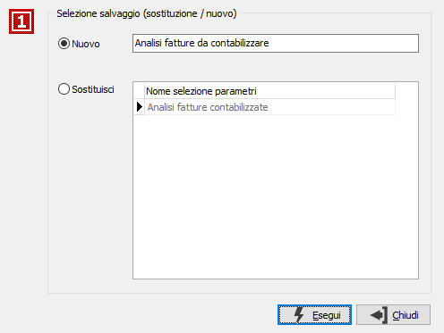
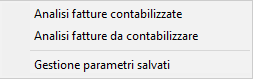
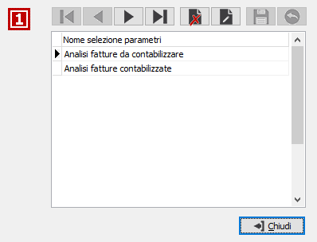

Gestione parametri
Il bottone ,
presente sulla toolbar, consente di salvare i parametri impostati in un'analisi,
in una stampa oppure in una procedura di elaborazione; compare la seguente
finestra in cui è possibile indicare se si tratta di un nuovo salvataggio
oppure se deve sostituire un salvataggio già presente; per effettuare
il salvataggio come Nuovo è necessario indicare una descrizione; i parametri vengono salvati per utente.


Il bottone ,
presente sulla toolbar, se attivo, consente di impostare i parametri in
base a salvataggi precedenti; si apre il menù a lato che riporta i salvataggi
presenti e la scelta relativa alla gestione dei parametri salvati; selezionando
uno dei salvataggi presenti i relativi parametri vengono impostati nella
finestra attiva; selezionando la scelta di gestione compare la finestra
che consente di visualizzare, modificare la descrizione oppure eliminare
i dati salvati.
